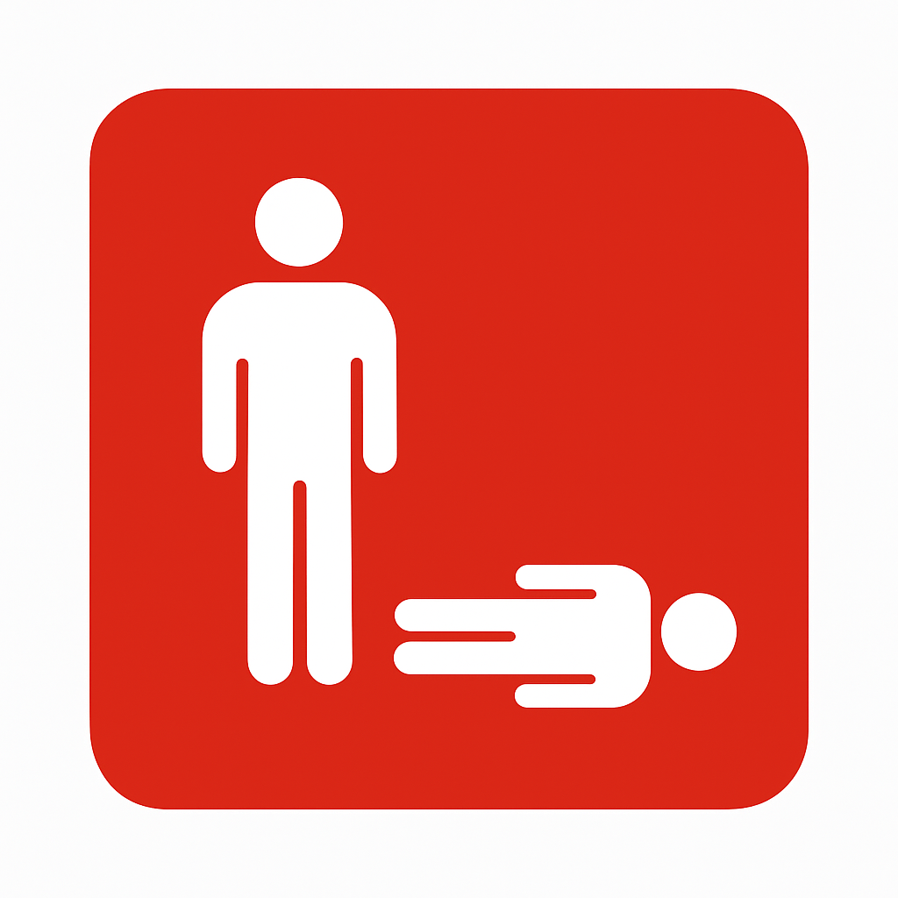
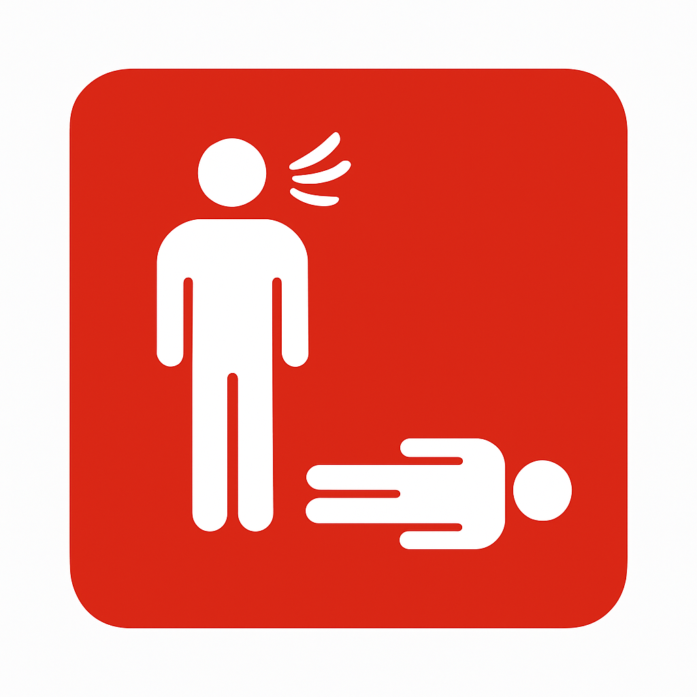

Your safety comes first — Is the area safe and secure?
✅ Yes = you can act safely
❌ No = get more info about safety
Unsafe
When you recognize an emergency, your first step is to assess the scene. Ask yourself:
Is the scene safe?
Are there any hazards?
What happened?
How did it happen?
Only proceed if the scene is safe. If it's not possible to secure it, do not intervene -> call 9-1-1 immediately.
Responsiveness

Check if the person is responsive.
✅ Yes = responsive
❌ No = unresponsive
Breathing

Check if the person is breathing.
✅ Yes = breathing
❌ No = not breathing
Detail of the Technic
Technic Steps
Technic Truc
Related Emergencies
Call 9-1-1
ABC - Airway, Breathing, Circulation
A - Airway
Verify that the airway is not obstructed (check mouth and throat).
B - Breathing
Is the person breathing normally?
C - Circulation
Are there any signs of circulation: intense bleeding? If yes, it has to be stopped before CPR.
CPR Rhythm
Select a BPM to match the required CPR rhythm:
Signs & Symptoms
Selected Symptoms
Selected Symptoms
List of Technics
List of Emergencies
Emergency Symptoms
Emergency Care
Emergency Type
Minor
Major
Critical
Emergency Medicaments
—
Emergency Technics
—
Legalities of First Aid
First aiders must:
Get permission, if possible, before providing care.
Only provide the care they were trained to give.
Continue providing care until another trained person takes over, they are too exhausted to continue, the scene becomes unsafe, or the person's condition improves and care is no longer needed.
Getting Permission to Help:
You must get permission (consent) before providing care.
For an unresponsive person, the law assumes you have permission.
For a young child without a caregiver, provide care.
If a person refuses care, call EMS/9-1-1.
If you are unable to call, first ensure your own safety and then offer to provide care.
SOAP Assessment
Secondary Assessment should be completed every 5–10 min for Critical, and 10–60 min for Major emergencies.
Protect documentation in wilderness or remote environment. In our case, get a waterproof case for your smartphone.
Send the SOAP notes to the appropriate person. In our case, the PDF can be sent once back online.
If radioing, read the SOAP notes.
Prepare what you'll say. Be concise. Be objective.
Victim Information
SOAP Summary
Saved SOAP Note
Saved SOAP Notes
72h First Aid Kit
This checklist helps you manage and track your emergency kit contents.
📲 Install FIRST AIDers as an App
This application can work 100% offline once installed on your device.
📱 On iPhone (Safari)
Tap the Share button (bottom center of Safari).
Choose "Add to Home Screen".
Tap "Add" in the top-right corner.
📱 On Android (Chrome)
Tap the three-dot menu (top-right corner).
Select "Add to Home screen" or "Install app".
Confirm by tapping "Install".
Once installed, launch it like any other app — even when offline.
The SOAP you record while being offline are saved as PDF in your phone.
Tips for First Aiders
Below a list of tips to apply when being a First Aider.
How to be
Present yourself.
Be Present.
Detail Steps.
Get Permission.
What to avoid
Do not Declare Death.
Take Photos.
🧩 Training Game
Éclaireur0 XP
Choisis un mode de jeu
🪪 My Profile
To validate a certificate, go to myrc.redcross.ca and click on "Validate Certificate".
🧭 Explorers
Découvre les figures d'exploration et de survie derrière chaque niveau du Training Game.